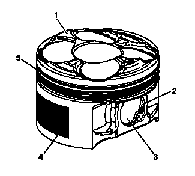
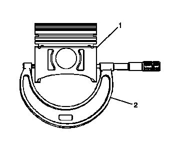
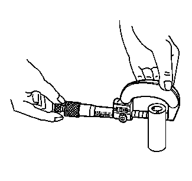
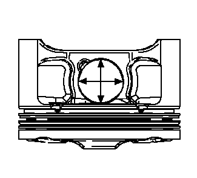
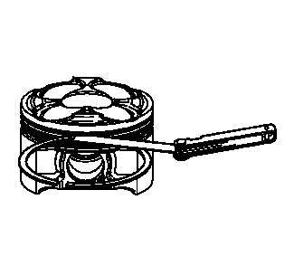
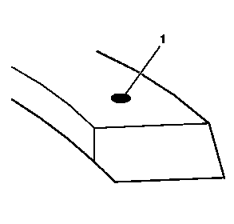
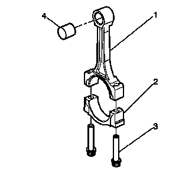
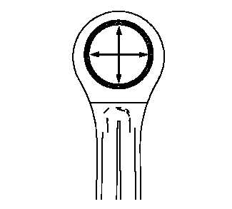
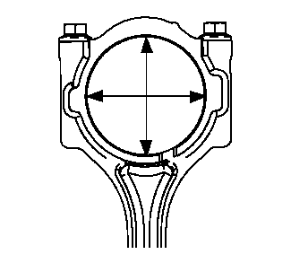

活塞、连杆和轴承的清洁与检查
活塞的清洁程序
-
1.用清洗剂清洗活塞裙部和活塞销。注意:切勿用钢丝刷清理活塞的任何部位。
- 2.使用活塞槽清洗器清洗活塞环槽。确保油环孔和槽清洁。
-
3.使用压缩空气干燥活塞。警告：请参见有关安全眼镜的警告。
活塞的检查程序
-
1.检查活塞是否存在以下情况：
- • 环槽岸、裙部或销座有裂纹
- • 活塞环槽有划痕、毛刺会导致卡滞（5）
- • 环槽岸（5）翘曲或磨损
- • 活塞销挡圈槽有毛刺（2）
- • 活塞（1）顶部有腐蚀部分
- • 裙部涂层（4）磨损或损坏
- • 活塞销孔磨损或活塞销（3）磨损
- 2.更换有任何损坏或过度磨损迹象的活塞。
活塞测量程序
-
1.按以下程序测量活塞宽度：
- 1.1 使用外径千分尺（2），在垂直于活塞销中心线的活塞止推面处，测量活塞裙底部上方11毫米（0.433英寸）处的活塞宽度。
- 1.2 从气缸直径中减去活塞宽度，将活塞的测量值和原气缸比较。
- 1.3 检查测量值。参见发动机机械系统规格。
- 1.4 如果测得的间隙大于提供的规格，且气缸孔在规格范围内，则更换活塞（1）。
-
2.按以下程序测量活塞销孔至活塞销的间隙：
- 2.1 活塞销孔和销上不得有清漆或擦伤。
- 2.2 使用外径千分尺测量活塞销的活塞接触区域。
-
3.使用内径千分尺，测量活塞销孔径。将结果与活塞销直径和活塞销至活塞销孔间隙规格进行比较。参见发动机机械系统规格。
- 4.如果间隙过大，确定是哪个零件超出规定值，必要时将其更换。
- 5.若活塞的任何尺寸超过规定值，必须更换活塞。
- 6.如果新活塞不符合间隙规格，可能必需将气缸体尺寸加大 0.25 毫米（0.010 英寸）。仅有一种尺寸的超大活塞和环可用于维修。
活塞环测量程序
-
1.按以下程序测量活塞环开口间隙：

- 1.1 将活塞环置于气缸孔内距离气缸体顶面约 25 毫米（1 英寸）的位置。用活塞头定位活塞环，确保活塞环与气缸孔垂直。
- 1.2 用测隙规测量活塞环端隙。参见发动机机械系统规格。
- 1.3 如果间隙超出了规定的规格，则必须更换活塞环。
- 1.4 对所有活塞环重复该程序。
-
2.按以下程序测量活塞环侧隙：
- 2.1 围绕活塞环槽旋转整个活塞环。如果是活塞环槽引起了卡滞，用细锉刀修整环槽。如果变形的活塞环造成了任何约束，则更换该环。
- 2.2 在活塞环安装在活塞上的情况下，使用测隙规在多个位置检查间隙。
- 2.3 将测量值与活塞环侧隙规格进行比较。参见发动机机械系统规格。
- 2.4 如果间隙大于规定值，更换活塞环。
-
3.在压缩环靠近端部处，有一个用于识别的定位凹坑（1）。将凹槽朝上安装压缩环。
- 4.如果新活塞环不能将间隙减少至规定值，则安装新的活塞。
- 5.如果新活塞不符合间隙规格，可能必需将气缸体尺寸加大 0.25 毫米（0.010 英寸）。仅有一种加大尺寸的活塞和活塞环可供维修用。
连杆的清洁程序
- 1.在溶剂中清洗连杆。
-
2.使用压缩空气干燥连杆。警告：请参见有关安全眼镜的警告。
- 3.拆下连杆盖，并清洁螺纹。
- 4.拆下并报废连杆轴承。不得重复使用曾经在运行中的发动机内使用过的连杆轴承。
连杆的目视检查程序
-
1.检查活塞销衬套（4）是否擦伤或损坏。
- 2.检查连杆梁（1）是否扭曲或弯曲。
- 3.检查连杆盖（2）上是否存在由于相互干涉所造成的划痕或损坏。
- 4.检查连杆轴承座合面是否有擦伤或磨损。
-
5.如果连杆孔上有轻微划伤或磨损，则使用轻砂纸采用圆形方向清洁连杆孔。彻底清洁部件，如果孔上使用了磨料，则进行高压清洗。注意:切勿擦伤连杆或连杆盖。
连杆的测量程序
-
1.用外径千分尺在与连杆相接触的部位两次测量活塞销。注意:所有部件的测量应在部件处于室温下进行。
-
2.使用内径千分尺，测量连杆活塞销孔径。
- 3.将活塞销孔减去活塞销直径。
- 4.将间隙测量值与正确规格进行比较。参见发动机机械系统规格。
- 5.如果间隙过大，则更换活塞销。如果新活塞销仍不能解决间隙问题，更换连杆。
活塞销端
-
注意:所有部件的测量应在部件处于室温下进行。1.使用旧螺栓，将连杆盖螺栓紧固至25 牛米（18 英尺磅力）+ 75 度。注意:孔规格是基于连接螺栓在最大扭矩规格下的数据。
- 2.使用内径千分尺，测量连杆曲轴轴承孔径。
- 3.将孔测量值与正确规格进行比较。参见发动机机械系统规格。
- 4.若孔超出规定值，则更换连杆。不可维修连杆。